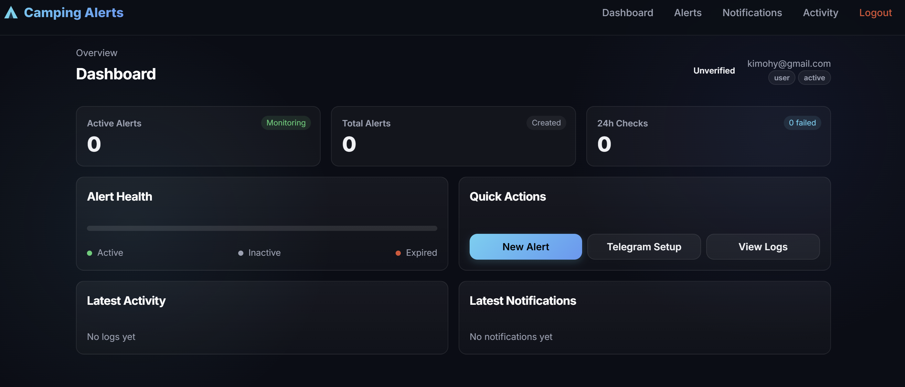
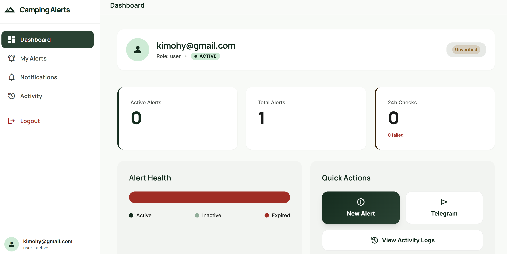

Vibe Coding 시대의 개막
Q. "Vibe coding"의 창시자는 누구인가요?
- 1. 일론 머스크 (Elon Musk)
- 2. 앤드류 응 (Andrew Ng)
- 3. 안드레이 카파시 (Andrej Karpathy)
- 4. 얀 르쿤 (Yann LeCun)
정답: 3번. 안드레이 카파시
2025년 2월, 안드레이 카파시가 대중화한 개념으로
"코드 자체의 존재를 잊고 직관(vibe)과 자연어 프롬프트에 전적으로 의존"하여
AI가 코딩하는 새로운 접근법입니다.
AI 코딩의 진화: 도구와 트렌드의 흐름 (2025-2026)
2025년 상반기
"채팅 보조에서 CLI 실행으로"
- Claude Code (May): 정식 출시. 파일 분석, bash 실행, Git 관리의 CLI 혁명
- OpenAI Codex (May): GPT-4 기반에서 GPT-5-Codex로의 진화 예고
- Cursor 1.x: 프롬프트 자동 제안 및 Tab 기반 코드 완성 강화
2025년 중반~하반기
"계획(Plan)하고 실행하라"
- Gemini CLI (Jun): Google의 오픈소스 에이전트 참전. NPM 기반 배포
- Cursor Plan Mode (Oct): '생각 먼저, 코딩 나중' 워크플로우 대중화
- Claude Code v2.0 (Oct): Subagents 도입 및 작업 되돌리기(/rewind) 추가
2025년 말~2026년 초
"에이전트 중심의 UI 재편"
- Antigravity (Nov): 자율 에이전트 전용 IDE. Gemini 3 Pro의 강력한 추론 결합
- Cursor v2.2 (Dec): 비주얼 에디터 및 컴포저(Composer) 기능 극대화
- GPT-5.3 Codex (Nov): 복잡한 리팩토링 및 프로덕션 코드 품질 비약적 향상
2026년 현재
"다중 에이전트와 핵심 철학"
- Parallel Agents (Apr): 로컬/클라우드 환경에서 다중 에이전트 병렬 실행
- Pi Agent (Early 26): Read/Write/Edit/Run 4대 기능에 집중한 미니멀리즘
- OpenClaw: 오케스트레이션 툴의 부상으로 에이전트 간 협업 완성
Trend Shift: 거시적 변화의 핵심
Chat to Agent
대화형 비서에서
자율 실행 요원으로
Context to Memory
단기 컨텍스트에서
git/문서 기반 장기 기억으로
Build to Vibe
상세 코드 구현에서
의도(Vibe) 중심의 설계로
최근 바이브 코딩의 트렌드
1. 랄프 루프 & SDD

2026년 가장 뜨거운 AI 코딩 기법.
Spec-Driven Development(SDD)와 결합된 무한 루프입니다.
while :; do cat SPEC.md | agent ; done
루프는 단순한 '실행 엔진'일 뿐이며, 루프를 실제로 가치 있게 만드는 것은 '정교한 스펙(Spec)'입니다.
에이전트가 SPEC.md를 읽고 작업을 수행한 뒤 git에 기록하면, 다음 루프의 에이전트는 업데이트된 상태를 다시 읽어 결정론적 진보를 만들어냅니다.
2. Harness Engineering
OpenAI Codex 팀이 고안한
에이전트 제어 프레임워크입니다.
-
컨텍스트 주입:
CLAUDE.md,AGENTS.md등을 통해
신입사원 수준의 명시적 가이드와 컨벤션 전달 -
아키텍처 제약: 볼링장 범퍼처럼 작업 범위를
강력하게 제한하여 AI의 환각(Hallucination) 방지 -
가비지 컬렉션: "AI 슬롭 청소" 시스템을 내장하여
나쁜 패턴의 반복 복제를 자동 차단
AI 기반 자율 개발 프로세스: 오케스트레이션
파편화된 개발 단계를 하나의 자율 순환 고리(Autonomous Loop)로 통합합니다.
PM (Taskmaster)
요구사항 오케스트레이션
PRD를 분석하여 Atomic TODO로 쪼개고, .taskmaster/에 프로젝트의 전역 컨텍스트와 히스토리를 관리합니다.
TODO.md, SPEC.md
Designer (Stitch)
Vibe 기반 UI/UX 생성
모호한 프롬프트나 스케치를 React 컴포넌트로 즉시 변환합니다. 디자인 'Vibe'를 코드로 주입하는 무한 캔버스 UI 툴입니다.
UI Components, Theme Tokens
Dev (Claude Code)
자율 구현 (Ralph Loop)
Taskmaster의 TODO와 Stitch의 UI를 결합하여 성공할 때까지 무한 반복 개발합니다. git 히스토리를 기억 저장소로 활용합니다.
cat PROMPT | agent
QA/Ops (Gemini CLI)
검증 및 무중단 배포
자동화된 테스트와 정적 분석을 수행하고, 서버 환경 구성을 Gemini-CLI로 직접 통제하여 프로덕션 릴리즈를 완료합니다.
Deployed, Health OK
협업의 핵심: "에이전트 간의 컨텍스트 공유"
사람은 'Vibe(의도)'를 설정하고, AI 에이전트들은 'Execution(실행)'의 무한 루프를 돌며 결과물을 만들어냅니다.
AI 코딩의 한계점: "AI 코딩은 도박이다?"
즉각적인 결과물은 인상적이지만,
세부 완성도와 개발자의 심리에 대한 경고음도 있습니다.
🎰 슬롯머신이 된 에디터
명령하고 대기하고 보상을 받는 구조는
극도의 중독성을 유발합니다.
AI 코딩은 종종 "생각 후 작성"이 아닌
"돌려놓고 잭팟 기대하기" 형태의
도박적 반복으로 변질되기도 합니다.
🎭 창의성과 영혼의 상실
직접 문제를 해결하고 구조를 이해하는
즐거움을 AI가 빼앗아갑니다.
개발자는 AI가 만든 불완전한 코드를 메꾸는
유지보수 담당으로 전락할 위험이 큽니다.
"코딩은 영혼에 좋은 일(Good for the soul)이어야 합니다.
AI 시대에 중요한 것은 기술적 진보보다
개발자로서의 자기 통제와 성찰입니다."
실전 사례: Vibe Coding의 파급력
1. 초기 프로토타입: 문서 중심의 개발
코드 작성의 전권을 AI에 위임하고, 오직 PRD와 AGENTS.md만으로 방향을 제어했습니다. 상위 기획 문서 업데이트를 통한 'Vibe Control'로만 단 며칠만에 서비스를 구현했습니다.
- 복잡한 로직 설계 없이 목적과 요구사항만 명세
- 개발자는 코드를 읽지 않고 기획에 집중


2. StitchMCP를 통한 디자인 혁신
프로토타입의 밋밋한 UI를 극복하기 위해 StitchMCP를 도입했습니다. 자연어 프롬프트만으로 일관된 토큰을 적용하여, 전문 퍼블리셔 수준의 심미성을 단번에 확보하고 배포에 성공했습니다.
3. 문과생 지인의 반격: "코드실력보다 도메인"
"단 하루 만에 똑같은, 아니 더 훌륭한 서비스를 만들어왔다."
- 사용 툴: 코드 지식 없이 Claude Code 하나만 사용
- 시사점: 구현 장벽의 붕괴. 이제 도메인 지식과 기획의도가 성패를 좌우함
현업에서 당장 시도해볼 것들
우선은 Cursor 100% 활용
남들이 잘 만들어놓은 하니스(Harness)와
프롬프트 템플릿을 팀 문화에 이식해봅니다.
"제발 사내에 클로드 코드나
반중력(Antigravity)이 도입되길..."
가상 엔지니어링 팀 (gstack)
한 명이 20명 팀의 역량을 갖추는 워크플로우
- /office-hours: 제품 가정 검증 및 PM 설계
- /plan-eng-review: 아키텍처 확정 (Senior)
- /qa & /ship: 버그 수정부터 PR 생성 자동화
Think → Plan → Build → Ship
결론: 개발자의 새로운 무기
Vibe Coding: 새로운 시대의 문법
기술적 장벽이 무너지고 구현의 비용이 '0'에 수렴하는 시대.
이제 우리에게 필요한 질문은 "어떻게 짤 것인가"가 아닙니다.
"구현은 AI의 영역, 통찰은 인간의 영역"
차이를 만드는 유일한 핵심은 도메인에 대한 깊은 이해와
문제를 정의하는 '의도(Intent)'의 명확함입니다.
AI will not replace you.
A person using AI will.
기술 너머의 본질을 봅니다.
- 2026. 04. Vibe Coding Presentation -